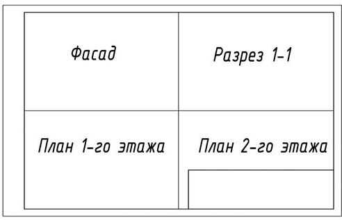

Строительными называются планы с относящимися к ним текстовыми документами, которые содержат проекционные изображения здания или его частей и другие данные, необходимые для его возведения, а также для изготовления строительных изделий и конструкций.
Виды строительных чертежей и нормативные документы
Содержание и оформление строительных чертежей, применяемые масштабы и условные обозначения на чертежах во многом зависят от вида строительных объектов, а также от назначения самих чертежей.
Различные строительные объекты – здания и сооружения – по назначению подразделяют на четыре основные группы:
- жилые и общественные здания, объединяемые общим названием – гражданские здания; к общественным зданиям относятся общежития, клубы, больницы, школы, различные административные здания;
- промышленные здания – здания фабрик, заводов, гаражей, котельных, электростанций и других производственных зданий;
- сельскохозяйственные здания – здания для содержания скота и птицы, для ремонта и хранения сельскохозяйственных машин, склады и хранилища продукции и т.п.;
- инженерные сооружения – мосты, тоннели, путевые эстакады, набережные, различные гидротехнические и земляные сооружения, доменные печи, резервуары и т.п.
По назначению строительные эскизы подразделяются на две основные группы:
- Эскизы строительных изделий, по которым на заводах строительной индустрии, домостроительных комбинатах изготовляют отдельные части зданий и сооружений;
- строительно - монтажные рисунки, по которым на строительной площадке монтируют и возводят здания и сооружения.
При выполнении и оформлении строительных чертежей следует руководствоваться государственными стандартами «Единой системы конструкторской документации» (ЕСКД), а также государственными стандартами «Системы проектной документации для строительства» (СПДС), которые распространяются на все виды проектной документации для строительства.
Как и стандарты ЕСКД, стандарты СПДС обеспечивают унификацию проектной документации, упрощение графических изображений и форм проектных документов, что снижает трудоемкость их выполнения. Помимо этого, они частично учитывают возможности машинного выполнения проектных документов в автоматизированных системах проектирования.
СНиП (Строительные нормы и правила) это вид нормативных документов, которым необходимо руководствоваться при проектировании. Само название говорит о том, что при разработке документации следует строго учитывать ограничения различных показателей, чтобы не нарушать существующих единых правил.
Применение норм и правил является обязательным для всех строительных и проектных организаций. В настоящее время руководствуются следующими официальными изданиями:
- СНиП 1.02.01-85 «Инструкция о составе, порядке разработки, согласования и утверждения проектно-сметной документации на строительство предприятий, зданий и сооружений»;
- ВСН 38-82 «Инструкция о составе, порядке разработки, согласования и утверждения схем и проектов районной планировки и застройки городов, поселков городского типа и сельских населенных пунктов»;
- ТП 101-81 «Технические правила по экономному расходованию основных строительных материалов»;
- ПУЭ - «Правила устройства электрозащиты».
Стадии проектирования
Жилые, общественные, промышленные здания и другие сооружения возводят по утвержденным проектам и сметам.
Проектно-сметную документацию (ПСД) выполняют специальные проектные организации и институты на основании заданий министерств, ведомств и других организаций. Этот исходный документ (ПСД) составляет заказчик с участием генерального проектировщика.
В состав проекта входят: планы, необходимые для производства общестроительных и специальных работ и для монтажа оборудования, пояснительная записка и смета, которая определяет финансовую стоимость строительства и отдельных видов работ.
Проектирование зданий может осуществляться в две стадии – технический проект и рабочие эскизы, или в одну стадию (для простых объектов) – технорабочий проект.
Технический проект (первая стадия проектирования) предназначен для рассмотрения и оценки архитектурно-планировочных и конструктивных решений, вопросов инженерного оборудования и организации строительства, его сметной стоимости и основных технико-экономических показателей с целью определения возможности и целесообразности строительства запроектированного объекта и принятия решения об утверждении проекта.
Утвержденный технический проект – основа для разработки рабочих чертежей.
В состав технического проекта здания входят: титульный лист, пояснительная записка, планы типового и неповторяющегося этажей, подвала, фасады, разрезы с маркировкой индустриальных изделий, сметы, технико-экономические показатели и другие проектные материалы, а также в состав технического проекта входит генеральный план участка застройки с нанесением всех проектируемых и существующих зданий.
Рабочие рисунки (вторая стадия проектирования) составляют на основе утвержденного технического проекта. В состав рабочих чертежей на строительство здания входят архитектурно-строительные планы здания (планы, фасады, разрезы) и в случае необходимости элементы планов, фрагменты фасадов; схемы расположения фундаментов, перекрытий, стен, крыши; изображение конструктивных элементов – узлов и деталей; проекты санитарно-технических устройств и благоустройства территории.
Большинство промышленных, жилых и общественных зданий, а также многие инженерные сооружения в настоящее время строят по типовым проектам, что способствует индустриализации строительства, улучшению его качества и значительно снижает расходы на проектно-сметные работы. В состав типового проекта входят все рабочие наброски с пояснительной запиской и сметой стоимости строительства.
Типы зданий и сооружений
Здания могут быть классифицированы:
- по назначению: гражданские (жилые и общественные), промышленные (производственные, административно-бытовые и вспомогательные) и сельскохозяйственные;
- этажности: малоэтажные – высотой до двух этажей, средней этажности – высотой от трех до пяти этажей, повышенной этажности – высотой шесть – десять этажей, многоэтажные – от десяти до 29 этажей и высотные – высотой свыше 30 этажей, или свыше 100 м;
- конструктивной схеме: каркасные, бескаркасные, с неполным каркасом крупнопанельные и др.;
- основному материалу несущих конструкций: каменные (из кирпича, естественных или искусственных камней), железобетонные (в том числе из легкого бетона), металлические, деревянные, смешанного типа;
- способу возведения: традиционного типа (основные вертикальные несущие конструкции из кирпича, мелких естественных или искусственных камней; перекрытия сборные или монолитные); сборные из мелко или крупноразмерных элементов (изготовленные предварительно на заводе сборные детали и изделия, крупные блоки, панели, объемные элементы полной заводской готовности), монолитные (из тяжелого или легкого бетона, в том числе армированного непосредственно на строительной площадке в специальных формах – опалубке), сборно-монолитные (комбинируются сборные детали с элементами из монолитного бетона или железобетона);
- огнестойкости – подразделяются по степеням огнестойкости, классам конструктивной и функциональной пожарной опасности;
- долговечности (продолжительность службы здания, по истечении которой его эксплуатация невозможна) здания делятся на три степени: срок службы свыше 100 лет; срок службы от 50 до 100 лет; срок службы от 20 до 50 лет;
- классам – по капитальности в зависимости от градостроительных требований и назначения здания делят на четыре класса (определяются степенью долговечности, огнестойкости, благоустроенности, качеством отделки и инженерным оборудованием).
Строительная конструкция – это часть здания или сооружения, выполняющая определенные несущие (воспринимает нагрузки от конструкций, расположенных выше и передает эти нагрузки на нижележащие конструкции), ограждающие и (или) эстетические функции. По строительному материалу конструкции могут быть бетонные, железобетонные, каменные, металлические, деревянные, пластмассовые и т. п.
Строительное изделие – это изделие, предназначенное для применения в качестве элемента зданий, сооружений и строительных конструкций. Элемент строительной конструкции — это составная часть сборной или монолитной конструкции.
Сведения об основных строительных материалах
В строительстве, при возведении зданий и сооружений применяются различные строительные материалы и изделия из них. Основными строительными материалами в промышленном и гражданском строительстве являются цемент, бетон, кирпич, камень, дерево, известь, песок, черные металлы, стекло, кровельные материалы, пластик и др.
Строительные материалы разделяют на природные (естественные) и искусственные. К природным относят различные плотные горные породы (каменные материалы) и рыхлые горные породы или грунтовые материалы (глина, песок), древесина и др., к искусственным – кирпич, цемент, железобетон, стекло, тепло и гидроизоляционные материалы, металлические строительные материалы, краски, облицовочные плитки и др. Их получают из природного и искусственного сырья, побочных продуктов промышленности и сельского хозяйства с применением специальных технологий. Искусственные материалы отличаются от исходного сырья, как по строению, так и по химическому составу, что обусловлено коренной переработкой его в заводских условиях.
В настоящее время строительная промышленность располагает большим, с каждым годом увеличивающимся количеством материалов. Каждый вид материалов имеет свои преимущества и недостатки, а, следовательно, и свои рациональные области применения.
Строительные изделия жилых и общественных зданий и сооружений в процессе эксплуатации испытывают воздействие различных разрушающих факторов. Так, кровля подвергается снеговой и ветровой нагрузкам, а также увлажнению и высыханию, попеременному замораживанию и оттаиванию, воздействию солнечной радиации и т. п.; чердачные перекрытия – статическим нагрузкам и воздействию перепадов температур воздуха; стеновые панели – статическим нагрузкам, атмосферным воздействиям и перепадам температур в отапливаемых зданиях; междуэтажные перекрытия – воздействию статических нагрузок; полы – увлажнению, статическим нагрузкам и истиранию. Таким образом, применяя различные материалы и изделия для строительства зданий и сооружений, следует учитывать не только условия, в которых изделие или материал будет эксплуатироваться, но и их основные качества, определяющиеся, прежде всего физико-механическими свойствами.
Конструктивные элементы и схемы зданий
В строительной практике различают понятия «здание» и «сооружение».
Зданием называется наземное сооружение, имеющее внутреннее пространство, предназначенное и приспособленное для того или иного вида человеческой деятельности (например, жилые дома, заводские корпуса и т.д.). Здания могут использоваться как для проживания людей, так и для производственной, сельскохозяйственной деятельности, общественных нужд, в качестве склада или хранилища. Его важнейший атрибут – капитальность, то есть длительная эксплуатация.
Сооружением принято называть все, что искусственно возведено человеком для удовлетворения материальных и духовных потребностей общества. К сооружениям относят как памятники, так и утилитарные объекты: мосты, башни, тоннели, бункеры, убежища и многое другое. Они возводятся с применением капитальных технологий и рассчитаны на длительное использование.
Несмотря на различия, существующие между зданиями и сооружениями, как во внешнем виде, так и во внутренней структуре, все они состоят из основных взаимосвязанных конструктивных элементов, выполняющих определенные функции.
Конструктивным элементом называется отдельная самостоятельная часть здания или сооружения: фундамент, стены, перегородки, цоколь, отмостка, перекрытие, покрытие, кровля, стропила, лестничный марш, оконный или дверной блок.
Несущие элементы (фундаменты, стены, каркасы, перекрытия и покрытия) воспринимают вертикальные и горизонтальные нагрузки, возникающие от массы оборудования, людей, снега, собственной массы конструкций, действия ветра и т.д.
Ограждающие элементы (наружные и внутренние стены, полы, перегородки, заполнения оконных и дверных проемов) защищают внутренние помещения от атмосферных воздействий. Они позволяют поддерживать внутри зданий требуемые температурно-влажностные и акустические условия. Кроме того, встречаются конструктивные элементы, которые одновременно совмещают несущие и ограждающие функции, например, стены и покрытия.
Кроме вышеперечисленных, существует ряд конструктивных элементов как, например, балконы, входные площадки, приямки у окон подвала и др., которые нельзя отнести ни к одной из указанных групп.
Основные конструктивные элементы зданий – типовые строительные изделия. Конструктивным элементам (изделиям) присвоены буквенные обозначения – марки. Марки строительных изделий, которые проставляют на рабочих чертежах и схемах расположения элементов сборных конструкций, состоят из начальных букв названий соответствующих элементов:
- Балки....Б
- Панели стеновые....ПС
- Балки подкрановые....БП
- Перемычки....ПР
- Балки стропильные....БС
- Плиты перекрытий, покрытий....П
- Балки фундаментальные....БФ
- Площадки лестничные....ЛП
- Блоки стеновые....СБ
- Связи вертикальные....ВС
- Двери....Д
- Связи горизонтальные....ГС
- Колонны....К
- Сетки арматурные....С
- Окна....ОК
- Стойки....СК
- Марш лестничный....ЛМ
- Фермы стропильные....ФС
- Панели перегородок....ПГ
- Фундаменты....Ф
- Фундаментные блоки....ФБ
- Фундаменты под оборудование....ФО
Если несколько конструктивных элементов однотипные, то им присваивается один и тот же порядковый номер.
Основные конструктивные элементы зданий различного назначения показаны на Рис.1.
Рис. 1. Конструктивные элементы здания:
1 – фундамент, 2 – отмостка, 3 – цоколь, 4 – несущие стены, 5 – межэтажное перекрытие, 6 – чердачное перекрытие, 7 – перегородка, 8 – наклонные стропила, 9 – обрешетка кровли, 10 – подкос, 11 – стойка, 12 – люк, 13 – чердак, 14 – мауэрлат, 15 – перемычка, 16 – лестничный марш, 17 – косоур, 18 – лестничная площадка, 19 – тамбур
Основные части здания
Общий чертеж здания представляет собой сборочный чертеж, так как каждое здание в целом состоит из отдельных частей и узлов, а каждый узел – из отдельных элементов. Для понимания строительного чертежа следует вначале ознакомиться с терминологией, применяемой в строительном деле. Для этого рассмотрим основные части, из которых состоит здание (рис. 2).
Основными конструктивными элементами здания являются фундаменты, стены, перегородки, перекрытия, окна, двери, крыша и лестницы.
Рис. 2. Основные части здания
Основание – слой грунта, на который опирается фундамент и он воспринимает вес здания. Основания бывают естественные (грунт) и искусственные (сваи и т. п.).
Фундамент – это часть здания, которая находится в земле и он опираются стены и колонны. Фундамент служит для передачи и распределения нагрузки от здания на грунт. Верхняя часть фундамента называется поверхностью, или обрезом, а нижняя – подошвой фундамента. Отмостка служит для отвода атмосферных вод от стен здания.
Отмостка состоит из бетонной подготовки и асфальтового покрытия, но могут применяться и другие конструкции, и материалы. Обычно ширину отмостки принимают равной 700-1000 мм, с уклоном 1-3%.
Гидроизоляция защищает стены здания от увлажнения грунтовой водой. Чаще всего гидроизоляцию делают из двух слоев рубероида, склеенных битумной мастикой, или из других материалов.
Цоколь – нижняя часть стены над фундаментом до уровня пола первого этажа. Цоколь предохраняет эту часть стены от атмосферных влияний и механических повреждений. Кроме того, цоколь зрительно придаёт зданию более устойчивый вид.
Стены представляют собой вертикальные ограждения помещений, начинающиеся от фундаментов. Назначением стен является ограждение помещений от внешней среды (наружные стены) или от смежных помещений (внутренние стены). Стены, несущие нагрузку от других, опирающихся на них конструктивных элементов здания, называют несущими, или капитальными. Стены, опирающиеся на фундамент, но не несущие нагрузок от других элементов зданий, кроме собственного веса, называют самонесущими. Материалом стен могут служить кирпич, бетон, дерево, пластмасса и т. п. Толщина шва кирпичной кладки должна быть не менее 10 мм.
Перегородки разделяют внутреннее пространство здания в пределах этажа на отдельные помещения. Толщина межкомнатных перегородок 50- 180 мм.
Карниз – горизонтальный профилированный выступ стены, служащий для отвода от поверхности стен атмосферных осадков. Величина, на которую карниз выступает за поверхность стены, называется выносом карниза или карнизным свесом.
Парапет – часть стены, расположенная выше карниза и заменяющая ограждение.
Проёмы – отверстия в стенах для окон и дверей. Боковые и верхние плоскости проёмов называют откосами (притолоками).
Простенок – участок стены, расположенный между проёмами.
Четверть – прямоугольные выступы, предназначенные для опирания оконных и дверных коробок.
Перемычка – конструкция, перекрывающая проём сверху и воспринимающая нагрузку от расположенной выше кладки с передачей её на простенки.
Ниши – углубления в стене для размещения в них различного оборудования (встроенных шкафов, труб, батарей отопления и др.).
Перекрытия разделяют здание по высоте на этажи или отделяют верхний этаж от чердака. В первом случае их называют междуэтажными, а во втором – чердачными. Если под первым этажом есть подвал, то перекрытие называют над подвальным. Перекрытия представляют собой многослойную конструкцию, состоящую из несущих элементов (балки из дерева, металлические балки, железобетонные балки, плиты и др.) и различных полов с заполнениями, обеспечивающими утепление и звукоизоляцию помещений. Заполнителями могут служить минераловатные плиты, крупнозернистые насыпки, шлаки, различные плиты, укладываемые по накату. В жилых помещениях толщина междуэтажного перекрытия может быть 320...400 мм.
Покрытие – верхняя ограждающая конструкция, отделяющая помещение здания от наружной среды и защищающая их от атмосферных осадков. Эта конструкция совмещает функции потолка и крыши.
Покрытия с чердаком называют чердачными. Если кровля примыкает вплотную или объединяется с чердачным перекрытием, то покрытие называют совмещенным или бесчердачным.
Для отвода атмосферных осадков чердачные и бесчердачные покрытия делают с уклонами. Уклон покрытия зависит от материала и конструкции его верхнего водоизоляционного слоя. Чем плотнее материал кровли и чем герметичнее стыки ее элементов, тем меньше может быть уклон покрытия.
Крыши состоят из несущей и ограждающей частей. Несущими конструкциями чердачных крыш являются стропила. Стропильные ноги наклонных стропил опираются на подстропильные брусья (мауэрлаты), уложенные по верхнему обрезу стен. Плоскости, образующие крышу, называются скатами. Покрытие служит защитой здания от атмосферных осадков и ветра, от нагревания солнцем (перегрева).
Кровля – верхний водоизолирующий слой покрытия или крыши здания.
Стропила – несущие конструкции кровельного покрытия, которые представляют собой балки, опирающиеся на стены и внутренние опоры.
Мауэрлат – деревянные брусья, уложенные на наружные стены здания; на брусья опираются стропильные ноги.
Пандус – гладкий наклонный въезд или вход в здание или помещение.
Лестницы являются средством сообщения между этажами. Они состоят из наклонных элементов – маршей и горизонтальных элементов – площадок. Помещение, в котором размещают лестницу, называют лестничной клеткой. Лестницы представляют собой несущие конструкции, состоящие из наклонных ступенчатых элементов-маршей и горизонтальных плоскостных элементов лестничных площадок и перил.
Окна служат для освещения и проветривания помещения. В строительной практике используют оконные блоки. Оконный блок состоит из оконной коробки, остеклённых переплётов и подоконной доски. Оконные переплеты имеют открывающиеся или глухие створки, вставляемые в коробку (рис. 3).
Рис. 3. Основные элементы оконного проёма:
1 – подоконная доска, 2 – откос оконного проема, 3 – четверть, 4 – перемычка,5 – оконная коробка, 6 – глухая фрамуга, 7 – толь, 8 – форточка, 9 – оконный переплет
Окна могут быть одностворчатыми, двустворчатыми, трехстворчатыми или с балконной дверью.
Двери служат для сообщения между помещениями. На дверные коробки, укреплённые в проёмах стен, навешивают дверные полотна. По числу полотен различают двери одно и двупольные.
Двери по назначению делятся на внутренние и наружные, по способу открывания – на распашные, раздвижные, складчатые, вращающиеся и двери-шторы. Распашные двери разделяют по числу дверных полотен на однопольные, двупольные и полуторные.
Основной комплект рабочих чертежей архитектурных решений
Состав и правила оформления чертежей архитектурных решений устанавливает ГОСТ 21.501-2011.
В состав рабочей документации архитектурных решений включают рабочие эскизы, предназначенные для производства строительных и монтажных работ (основной комплект рабочих чертежей марки АР), а также при необходимости:
- рабочую документацию на строительные изделия;
- спецификацию оборудования, изделий и материалов;
- опросные листы, выполняемые в соответствии с данными поставщиков оборудования;
- локальную смету.
В состав основного комплекта рабочих чертежей марки АР включают:
- общие данные по рабочим чертежам;
- планы этажей, в том числе подвала, технического подполья, технического этажа и чердака;
- разрезы;
- фасады;
- планы полов (при необходимости);
- план кровли (крыши);
- схемы расположения элементов сборных перегородок;
- схемы расположения элементов заполнения оконных и других проемов;
- выносные элементы (узлы, фрагменты);
- спецификации к схемам расположения в соответствии с ГОСТ 21.101-97.
Любую консультацию и помощь по выполнению строительных чертежей вы можете получить здесь.
Основные требования к выполнению изображений
Строительные проекты, как и машиностроительные, выполняют методом прямоугольного проектирования на основные плоскости проекций, но в отличие от последних, изображениям присваивают другие названия: соответствующие виды здания, называют фасадами, горизонтальные разрезы здания – планами, вертикальные разрезы – поперечными и продольными разрезами, а горизонтальную проекцию или вид сверху на участок, на котором располагается проектируемое здание или комплекс зданий и сооружений, называют генеральным планом.
При выполнении проектной документации, предназначенной для строительства предприятий, зданий и сооружений, следует руководствоваться ГОСТ 2.305-2008 «Изображения – виды, разрезы, сечения», а также ГОСТ Р 21.1101-2013 «Система проектной документации для строительства (СПДС). Основные требования к проектной и рабочей документации». Графическая документация выполняется в минимальном объёме, достаточном для выполнения строительных работ и изготовления строительных изделий.
При разработке чертежей учитываются следующие требования:
- оптимальное использование чертежей типовых изделий и конструкций;
- сокращение номенклатуры применяемых марок изделий и конструкций;
- применение условных графических обозначений материалов и элементов зданий, допускаемых стандартами;
- использование упрощённых схем расположения сборных элементов (монтажных схем);
- выполнение чертежей в минимальных масштабах с учётом сложности изображений и насыщенности информацией при условии обеспечения ясности прочтения;
- возможность выполнения чертежей в виде электронных документов, передачи на электронных носителях, изготовления копий надлежащего качества.
Выполнение планов зданий
Планом здания называют изображение здания, мысленно рассеченного горизонтальной плоскостью на уровне оконных и дверных проемов и спроецированного на горизонтальную плоскость проекции, при этом другая часть здания (между глазом наблюдателя и секущей плоскостью) предполагается удаленной. На чертеже плана здания показывают то, что получается в секущей плоскости и, что расположено за ней (рис. 4).
При вычерчивании планов штриховка стен и перегородок не наносится. Несущие стены выполняются основной сплошной линией, перегородки, оконные проемы, лестничные марши – тонкой сплошной линией. Условные графические изображения дверей, элементов оборудования выполняются тонкой сплошной линией.
Рис. 4. Горизонтальный разрез здания на чертеже
Эти оси являются условными геометрическими линиями. Они служат для привязки здания к строительной координационной сетке и реперам генерального плана, а также для определения положения несущих конструкций, так как эти оси проводят только по капитальным стенам и колоннам. Планы этажей подписывают по типу: «План 1-го этажа». Если планировка помещений второго и последующих этажей одинакова, то кроме плана первого этажа выполняют также план второго этажа и называют его «План типового этажа» или «План 2...9-го этажей».
В промышленных зданиях горизонтальные секущие плоскости проводят на уровне отдельных элементов, площадок или этажей зданий и полученные планы называют по этим числовым значениям уровней (отметкам пола), например: «план на отметке + 6,600».
На планах этажей наносят и указывают:
- координационные оси здания, расстояние между ними и крайними осями, оси у деформационных швов; отметки участков, расположенных на разных уровнях; направление и величину уклона полов; толщину стен и перегородок и их привязку; все проемы, отверстия, борозды с необходимыми разрезами и привязками (для проемов с четвертями размеры показывают по наименьшей величине проемов, размеры дверных проемов в перегородках на планах не показывают);
- наименование помещений (технологических участков) с указанием размещенных в них производств по взрывной, взрывопожарной и пожарной опасности (категории производства);
- площади помещений.
Допускается наименование помещений, их площади и категории, размещаемых в них производств приводить в экспликации помещений с нумерацией их на плане. Номера помещений на планах проставляют в кружках диаметром 7-8 мм.
Наименование помещений не указывают, если их назначение понятно и без поясняющих надписей, например, на планах этажей жилых зданий.
Выполнение разрезов зданий
Разрезом называется изображение здания, мысленно рассеченного вертикальной плоскостью. Если плоскость перпендикулярна продольным осям, то разрез называется поперечным, а параллельна им – продольным. Разрезы на строительных чертежах служат для выявления объемного и конструктивного решения здания, взаимного расположения отдельных конструкций, помещений и т.п. (рис.5, 6, 7)
Рис. 5. Вертикальный разрез здания на чертеже
Архитектурные разрезы служат для выявления внутреннего вида помещений и расположения архитектурных элементов интерьера, на которых не показывают конструкции перекрытий, стропил, фундаментов и других элементов, но проставляют высоту помещений, оконных и дверных проемов, цоколя и т.п. Высоты этих элементов чаще всего определяются высотными отметками. Архитектурные разрезы составляют в начальной стадии проектирования для проработки фасада здания. Для строительства здания архитектурный разрез не используется, так как на нем не показаны конструктивные элементы здания (рис. 6).
Конструктивные разрезы выполняют на стадии разработки рабочих чертежей здания, на которых показывают конструктивные элементы здания (фундаменты, стропила, перекрытия), а также наносят необходимые размеры и отметки (рис. 7).
Рис. 6. Архитектурный разрез здания на чертеже
Рис. 7. Конструктивный разрез здания на чертеже
На рабочих чертежах направление взгляда для разрезов принимают, как правило, по плану – снизу-вверх и справа налево.
Направление секущей плоскости, как правило, выбирают таким, чтобы она проходила по наиболее важным в конструктивном или архитектурном отношении частям здания: оконным и дверным проемам, лестничным клеткам, балконам и т.д.
Направление секущей плоскости для разреза обозначают на плане первого этажа разомкнутой линией со стрелками на концах, показывающими направление проецирования и взгляда наблюдателя. Около стрелок ставят арабские цифры, а на самом разрезе делают надпись, например:
«Разрез 1–1». Допускается разрезы обозначать прописными буквами, например: «Разрез А–А».
Из видимых элементов на разрезах не изображают элементы конструкций, расположенные ниже фундаментных балок и верхней части ленточных фундаментов.
Пол на грунте изображают одной сплошной основной линией, пол на перекрытии и кровлю изображают одной тонкой сплошной линией независимо от числа слоев в их конструкции. На разрезах наносят и указывают:
координационные оси здания (сооружения) и расстояния между ними и крайними осями, оси у деформационных швов; отметки уровня земли, чистого пола этажей и площадок; отметки низа несущих конструкций покрытия одноэтажных зданий (сооружений) и низа плит покрытия верхнего этажа многоэтажных зданий; отметку низа опорной части заделываемых в стены элементов конструкций; отметку верха стен, карнизов, уступов, головки рельсов крановых путей; размеры и привязки по высоте проемов, отверстий, ниш и гнезд в стенах и перегородках, изображаемых в сечении; толщину стен и их привязку к координационным осям здания или сооружения (при необходимости); марки элементов здания, не замаркированных на планах и фасадах; ссылку на узлы.
Разрез здания вычерчивают в следующем порядке:
а) сначала проводят горизонтальную прямую, которую принимают за уровень пола первого этажа (т.е. ее уровень равняется отметке 0,000). Для построения различных элементов разреза используют некоторые размеры, имеющиеся на плане, например, расстояние между координационными осями, толщину внутренних и наружных капитальных стен, и перегородок, высоту оконных и дверных проемов и т.д. Затем проводят вторую горизонтальную линию, определяющую планировочную поверхность земли;
б) далее за первой горизонтальной прямой, обозначающей линию чистого пола, откладывают расстояние между соответствующими координационными
Построение разреза по лестнице
Лестницы являются ответственной частью многоэтажного здания, так как служат не только для сообщения между этажами, но и для эвакуации при аварийной ситуации (например, пожаре).
По назначению их подразделяют на основные или главные, и служебные или вспомогательные. Служебные лестницы используют для сообщения с подвалами, чердаками и в качестве запасных для эвакуации людей в случае пожара. Пожарные лестницы служат для наружного доступа на этажи, крышу и чердак.
По материалу лестницы подразделяют на железобетонные, деревянные и стальные. По способу изготовления различают сборные и монолитные железобетонные. В настоящее время, в основном, распространены сборные лестницы. Каждая лестница состоит из маршей и площадок. Марш представляет собой конструкцию, состоящую из ряда ступеней, которые опираются на балки – косоуры, располагаемые под ступенями. В одном марше должно быть не более 18 и не менее 3 ступеней. Несущие элементы марша своими концами упираются на несущие элементы площадок. В состав маршей также входят ограждения – перила. Высота ограждения 90-95 см (рис. 8).
Рис. 8. Основные элементы лестничной клетки
Лестничные площадки, устраиваемые на уровне каждого этажа, называют этажными, а между этажами – межэтажными или промежуточными. Для графического изображения разреза по лестнице необходимо знать высоту этажа, ширину марша, количество маршей на этаже и размеры ступеней (или уклон марша). К вычерчиванию разреза по лестнице приступают после выполнения расчетов по определению размеров элементов лестницы и размеров лестничной площадки (рис.9).
Рис. 9. Основные элементы лестницы
Выполнение фасадов зданий
Фасадами называют виды зданий спереди, сзади, сбоку. Вид здания сверху называют планом крыши.
Фасады здания дают представление о внешнем виде проектируемого сооружения и его архитектурной композиции. Существуют главный (со стороны улицы или магистрали), дворовый и боковые фасады.
В проектах обычно дают фасады всех сторон здания. При его сложной конфигурации (Г или Ш-образной и т.п.) фасады, находящиеся в разных плоскостях допускается изображать на отдельных чертежах. На одинаковые фасады выполняют один чертеж.
При оформлении чертежей фасадов руководствуются требованиями ГОСТ 21.501–2011. На фасадах наносят и указывают: координационные оси здания (сооружения) проходящие в характерных местах фасада (например, крайние, у деформационных швов, в местах уступов в плане и перепада высот); отметки уровня земли, входных площадок, верха стен, низа и верха проемов и расположенных на разных уровнях элементов фасадов (например, козырьков, выносных тамбуров).
Все построения, связанные с вычерчиванием фасада, производят в такой последовательности:
- а) над чертежом плана здания на расстоянии 30-50 мм от него наносят основную сплошную горизонтальную линию, обозначающую линию уровня земли. Далее, выше линии уровня земли в соответствии с размерами наносят линию уровня чистого пола (нулевая отметка);
- б) наносят крайние координационные оси и общий контур здания, а также выступающие его части. Для этого от уровня земли последовательно откладывают величину цоколя, высоту помещения 1-го этажа, толщину междуэтажного перекрытия, высоту помещения 2-го этажа, толщину чердачного перекрытия. Видимые контуры на чертежах фасадов выполняют сплошной тонкой линией; линию контура земли допускается проводить утолщенной линией, выходящей за пределы фасада.
а, б
- в) вычерчивают архитектурные элементы фасада (оконные и дверные проемы, балконы, козырек над входной дверью, карниз, крышу). Расположение оконных и дверных проемов определяют в соответствии с планом здания;
- г) вычерчивают оконные переплеты, двери, проставляют знаки высотных отметок. Справа и слева от изображения на расстоянии 10-15 мм проставляют высотные отметки уровня земли, цоколя, низа и верха проемов, карниза и верха кровли.
Размеры на чертежах фасада не наносят, показывают только координационные оси стен, расположенных по углам здания.
Изображение фасадов именуют по крайним координационным осям и надписывают, например: «Фасад 1-3».
в, г
Последовательность выполнения чертежа архитектурных решений
При выполнении чертежа следует, прежде всего, наметить предварительную компоновку расположения изображений на рабочем поле чертежа (рис. 10).
По заданным схемам этажа, фасада и вертикальному разрезу 1-1 необходимо вычертить:
- фасад;
- план 1-го этажа;
- план 2-го этажа;
- вертикальный разрез 1-1 здания;
- таблицу экспликации помещений.
Оконные и дверные проемы обозначены в заданиях на планах этажей индексами ОК1, Д1 и т.д., а размеры их приведены в спецификациях.
Рис. 10. Компоновка чертежа
Размещение перегородок, оконных и дверных проемов в них, а также другие недостающие размеры частей здания определяются по чертежу с помощью линейного масштаба.
На плане нанести: толщину стен и перегородок, оконные и дверные проемы, лестничные марши, приборы сантехнического оборудования, маркировку осей и проемов, необходимые размеры, наименование помещений и их площади (цифры площадей подчеркнуть).
На разрезе произвести разбивку лестничных маршей. Дать экспликацию помещений.
Для вычерчивания архитектурного разреза 1-1 (разреза без вычерчивания конструкций) необходимо использовать вычерченные план и фасад здания:
- уровни других элементов здания взять по масштабу с фасада;
- за нулевую отметку принят пол первого этажа, что, как правило, соответствует верхней линии цоколя на фасаде;
- размеры оконных и дверных проемов взять по спецификации;
- заполнить основную надпись.